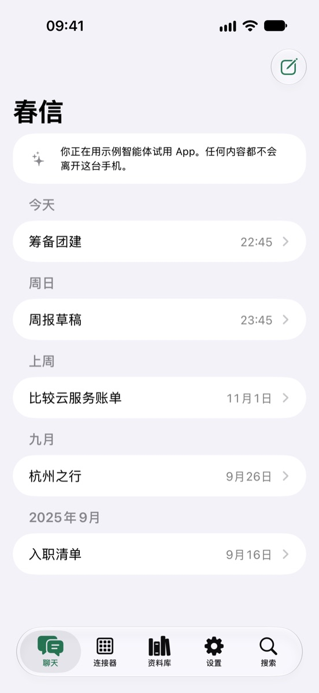
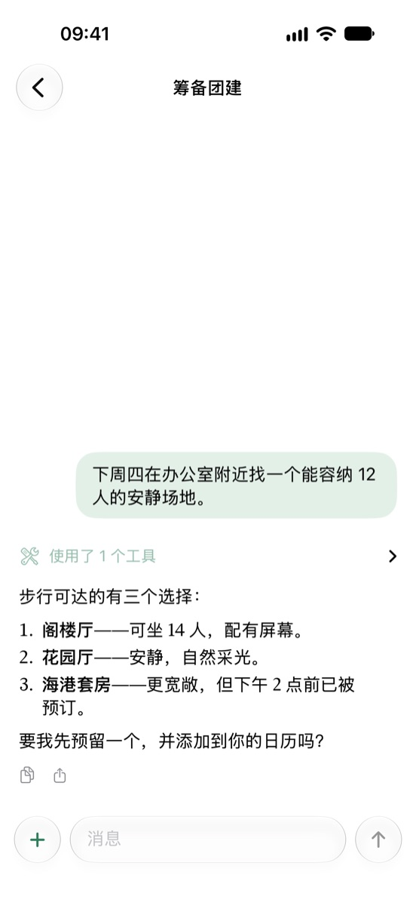
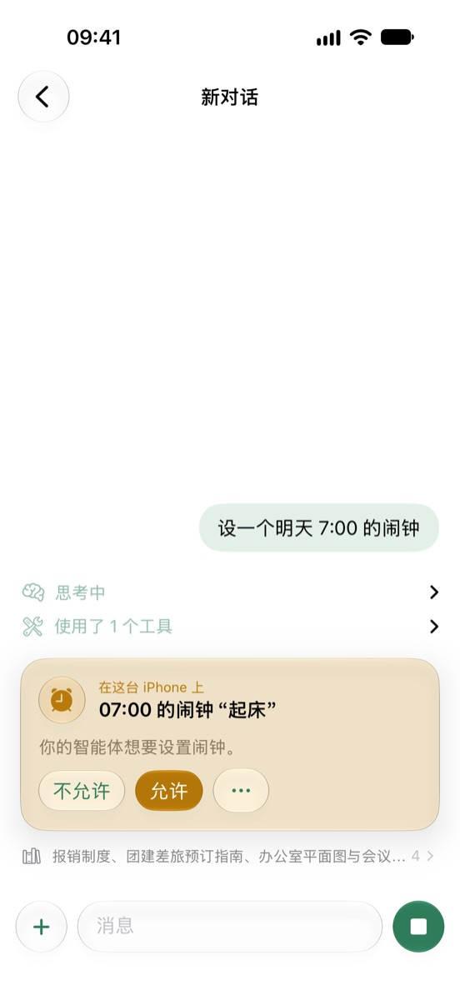
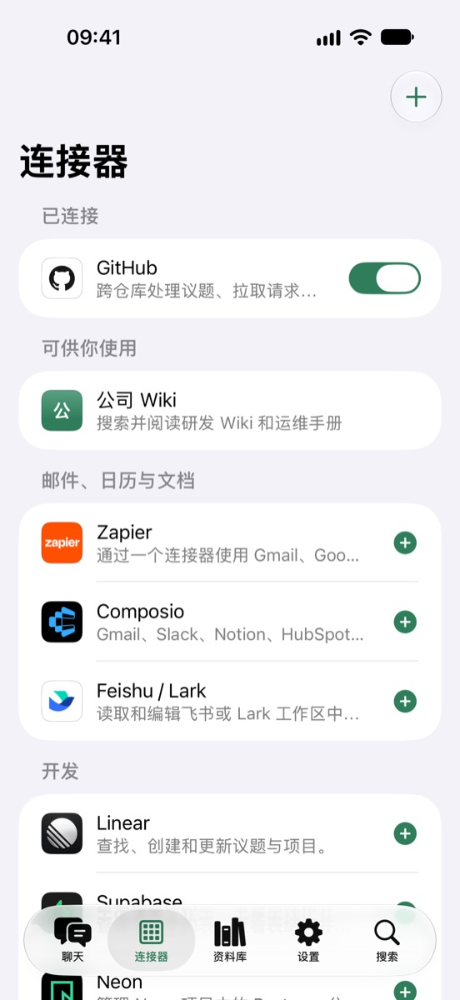
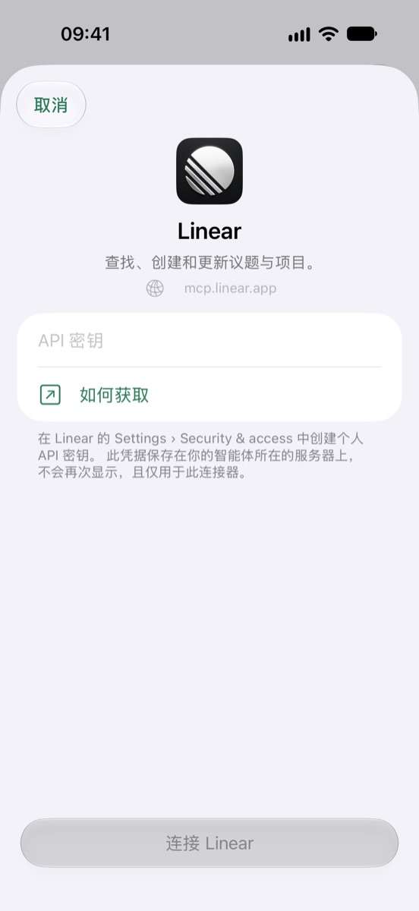
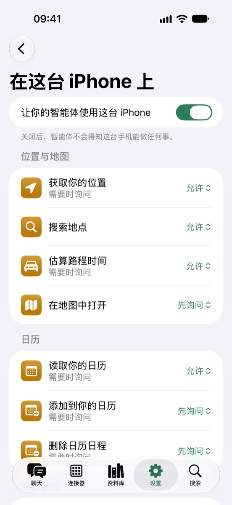
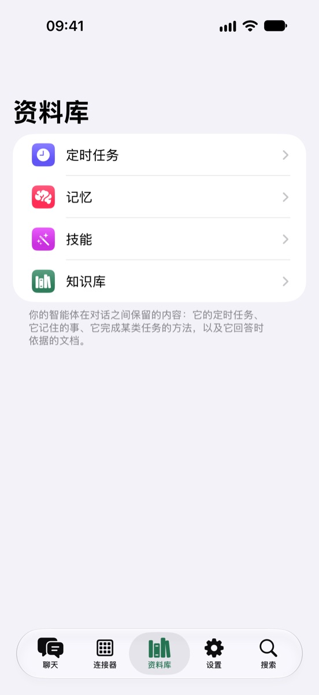
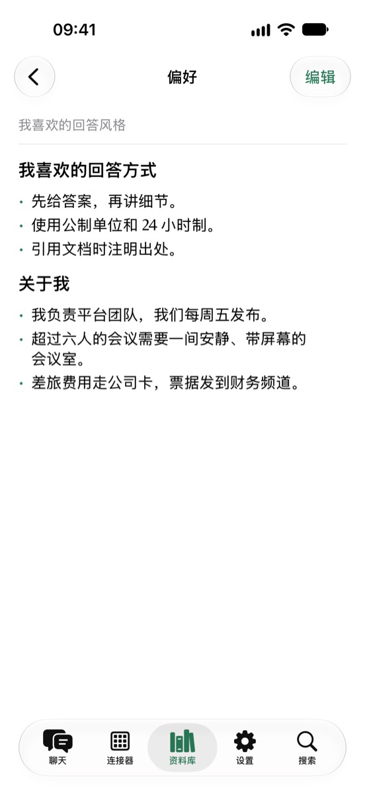

把你自己的 AI 智能体装进口袋。
春信（Spring Agent）是一款 iPhone App，用于连接你自己运行的智能体。与它聊天，看清它的每一步操作，并在任务需要时让它使用你的手机——始终经你同意。

春信（Spring Agent）是一款 iPhone App，用于连接你自己运行的智能体。与它聊天，看清它的每一步操作，并在任务需要时让它使用你的手机——始终经你同意。

智能体始终运行在你自己的服务器上。App 是通向它的窗口——当任务需要这台手机时，也是它的一双手。
流式输出的回答，智能体的思考过程、用到的每个工具和读过的来源，轻点即可查看。
位置、日历、提醒事项、闹钟、健康、通讯录和照片。智能体会先在这里征求你的同意，你可以逐个工具决定它能多自由地操作。
通过 MCP 将智能体接入 GitHub、Linear、Stripe、Zapier、飞书等工具，也可以接入你自己的任何 MCP 服务器。
定时任务、记忆、技能和知识库文档：智能体在对话之间保留的内容，都可以查看和编辑。
App 只与你登录的服务器通信，没有分析，也没有跟踪；使用你自己的服务器时，无需在我们这里注册账户。
内置的示例智能体完全在你的手机上运行，展示 App 的全部功能。







与你的智能体对话，以及让它读取你的日历或位置，都是免费的。Pro 让它可以更改这台手机上的内容——闹钟、日程、提醒事项、“健康”数据记录、邮件和信息草稿——并可开启三个以上的连接器。
没有自己的服务器？Spring Agent Cloud 由我们为你运行智能体，并包含 Pro 的全部功能。无需打开 App：任务需要用到这台手机时，请求会等待最多一天，而不会直接失败。你已允许的操作会在后台运行；需要先询问的操作会发来通知，轻点并允许后，对话就会继续。智能体向你提问或回答准备好时，你也会收到通知。
每月
每年，新订阅者可免费试用一周
以上为美国价格，App Store 会显示你所在地区的价格。除非在当前周期结束前至少 24 小时在“设置 › Apple 账户 › 订阅”中取消，否则订阅将自动续订。请参阅使用条款。
有疑问、遇到错误或有新想法？欢迎在 GitHub 上提交反馈，或发邮件至 contact@kezhenxu94.me。想运行你自己的智能体服务器，请从 Spring Agent 仓库开始。